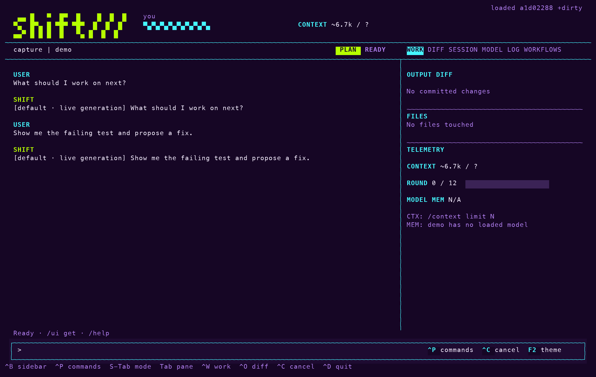

Docs > Use
Modes and policy
This page describes how Shift decides whether a tool call runs: the three modes, the allowlists for commands and MCP tools, the fixed rules that refuse destructive actions, and the judge model that decides the rest in autopilot. Every model tool call crosses this policy. Prompt words never authorize anything; the mode is data the process owns, and a live patch cannot change it.
Choose a mode
To change the mode for the session, enter /mode manual, /mode plan or /mode autopilot. The default is manual.

| Mode | What runs without asking | What happens to the rest |
|---|---|---|
manual | Reads, searches and runs already on the allowlist. | Shift asks before each tool execution. In a terminal one y or N keystroke answers. |
plan | Reads, search, traces, status, diff and extension listing. | Mutations are denied. |
autopilot | Reads, allowlisted runs and MCP tools. | A fixed rule set refuses the destructive cases. The judge model decides everything else. |
The same policy gates model tools, selected context reads and recovery retries. Slash commands you type are user operations and are not gated. Autopilot is an explicit choice; nothing in a prompt turns it on.
Set the run allowlist
Runs on the allowlist never ask in manual mode. The allowlist has three scopes whose entries union: the user scope in ~/.config/shift/settings.json, the project scope in .shift/settings.json, and the session. The project file is committable, so a repository can ship the commands its panes and tests need.
- At an approval prompt, answer
ato approve the run and add its exact argv to this session's allowlist. - To allow a prefix for this session, enter
/allow-run "cargo test". Quotes are optional. - To persist the prefix, add the scope:
/allow-run "cargo test" projector/allow-run "cargo test" user. - To review the list, enter
/run list. Each prefix is shown with its scope. - To remove a prefix from every scope that holds it, enter
/run deny cargo test.
Prefixes match exact leading elements of the argv only. /run allow cargo test is the session form of the same command, and /settings save promotes the whole effective list to the chosen scope. For an unattended run, --allow-run "ARGV PREFIX" on the command line seeds the same list and can be repeated. MCP callers cannot approve a run or extend the list.
Allow an MCP tool
Policy treats a tool from an MCP server like any other tool: manual asks, autopilot allows, and plan allows only tools the server annotates as read-only, non-destructive and closed-world. To put a tool on the same scoped allowlist as runs, enter /allow-mcp SERVER__TOOL with project or user when it should persist. A project can commit, for example, that github__search_issues never asks. See MCP servers for how tools are named and found.
What the fixed rules refuse
In autopilot, process-owned rules run before any model is asked. Reads, allowlisted runs and allowlisted MCP tools proceed. The following are refused without a model call:
rm -rfoutside the project- force pushes
git reset --hard,git clean -fandgit stash dropcurl … | sh- writes into Shift's own state
Shell deny and the process tool ceiling still apply in every mode.
How the judge decides
Everything the rules do not resolve goes to the judge model in one request to a separate model. The judge sees the user's last four messages, the proposed action with a 40-line preview, the project root, its git remotes, whether the tree has uncommitted work, and the allowlist. It never sees tool output. It answers allow or block with a rule name and one sentence. A block reaches the model as blocked by autopilot [rule]: reason, so the model tries another route. A judge that fails or does not answer counts as a block. After three consecutive blocks, or twenty in one turn, the judge pauses and manual prompting takes over for the rest of the turn.
The judge-model setting names the judge as PROVIDER/MODEL. When it is unset, the session's own provider and model judge. judge-model typesafe/jev-1.13.0 uses TypeSafe's Jev, a typed judge: one allow-or-block choice plus one yes/no per block category, answered in about a quarter of a second with calibrated probabilities and no text to parse. Jev sees the same evidence and nothing more, reads its key from TYPESAFE_API_KEY or ~/.config/typesafe/api-key, and is never selected on its own. When Jev cannot answer, the session model judges that action instead and the log line says so. A rejected key, an empty balance, a missing key or a malformed request turns Jev off for the rest of the session after one notice; /judge shows why. The judge page has the measured numbers.
With the typed judge, an allow it is not sure of asks you instead of going through. judge-ask-below (default 0.5) is the confidence under which that happens, and #f never asks. In print mode there is nobody to ask, so such an allow blocks with the rule judge-uncertain.
Turn the judge on, off or into shadow
The judge setting defaults to shadow: the judge decides in autopilot, and in manual mode it also runs beside every prompt. Its verdict shows in the approval preview, and both answers go to the session's judge.jsonl.
/judge reportprints agreement between you and the judge and lists the cases that disagreed./judge onkeeps the judge for autopilot without shadowing in manual mode./judge offmakes autopilot ask for anything the rules do not resolve, so nothing runs unattended.
Note: Each judge.jsonl record stores the action's arguments, the run preview and the user messages the judge saw, so scripts/evals.py judge --session NAME can replay a session's decisions through another judge model. See Benchmarks.
What the receipt records
The receipt at the end of each turn records judged, blocked and judge_ms, and counts allows that asked you as judge_asked. Blocks appear in the Log tab as [judge] entries. Every answer you give an approval prompt, whether y, a, n, Esc or a typed reply, appears there too as an [approval] entry naming the tool and its subject. See Receipts and sessions for the rest of the receipt.